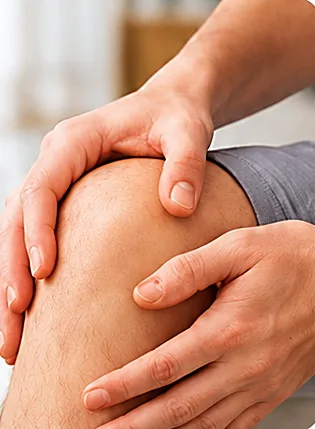
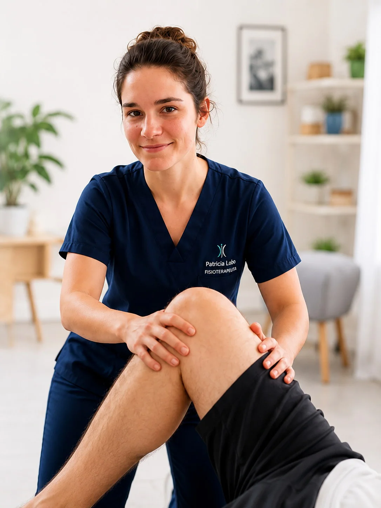
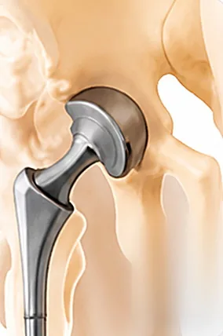

Fisioterapia
traumatológica
Tratamiento de lesiones musculares, articulares, esguinces, tendinitis, fracturas y postoperatorios.

Patricia Lobo Granado
Recupera tu movilidad, alivia el dolor y mejora tu calidad de vida sin salir de casa.
65 € por sesión individual

Tratamiento de lesiones musculares, articulares, esguinces, tendinitis, fracturas y postoperatorios.

Reeducación de la marcha, fortalecimiento y recuperación para una vuelta segura a tu día a día.

Tratamiento del dolor, rigidez y limitaciones funcionales tras lesiones o cirugías.
Atención a personas con ictus, Parkinson, esclerosis múltiple y otras patologías neurológicas.
Mejora del equilibrio, fuerza, autonomía y prevención de caídas para un envejecimiento activo y saludable.
Mejora de la capacidad cardiovascular y la calidad de vida tras infartos, cirugías o enfermedades cardíacas.
Soy Patricia Lobo Granado, fisioterapeuta especializada en fisioterapia a domicilio en Oviedo.
Mi objetivo es ayudarte a recuperar tu movilidad, aliviar el dolor y mejorar tu calidad de vida con un tratamiento personalizado y adaptado a tus necesidades.
ContactarTarifas claras
Atención personalizada en Oviedo. Si el desplazamiento es fuera de la zona habitual o se solicita atención urgente, el posible suplemento se confirma antes de reservar.
65 €por sesión
Reservar por WhatsApp300 €60 € por sesión
Reservar por WhatsApp580 €58 € por sesión
Reservar por WhatsAppInformación práctica
Si necesitas confirmar tu caso o disponibilidad, puedes consultar directamente antes de reservar.
Sí. La atención urgente está sujeta a disponibilidad y debe consultarse previamente. Dependiendo del horario y de la urgencia del desplazamiento, puede aplicarse un suplemento sobre la tarifa habitual; se confirmará antes de la cita.
Sí. El servicio principal se presta en Oviedo, pero puede desplazarse a localidades cercanas. Los desplazamientos fuera de la zona habitual pueden tener un suplemento, que se confirmará antes de reservar.
Puedes escribir por WhatsApp al 680 288 442 o llamar al mismo número. La fecha y la hora se confirmarán según disponibilidad.
La duración puede variar según la valoración y el tratamiento necesario. Se indicará de forma clara al concertar la cita.
La forma de pago disponible se confirmará antes de la cita.
Al reservar se indicará si es necesario preparar algún informe, material o espacio concreto, según el tratamiento.
Sí. El bono de 5 sesiones cuesta 300 € y el bono de 10 sesiones cuesta 580 €. Puedes consultar por WhatsApp antes de reservar.
Oviedo y localidades cercanas
Consulta disponibilidad y recibe confirmación antes de la cita.